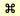

OSの違いによるフォトショップの操作の違いを学習します。
通常、ビジネスでパソコンを使用する場合は
Windowsのパソコンを導入している会社がほとんどです。
しかし、印刷物の作成などクリエイティブな仕事を専門に扱う会社では、
Macが使われている場合もあります。
WindowsとMacではOS、つまりパソコンを動かすシステム自体に違いがあります。
たとえばキーボードやマウスなどの機器面での違いがあるほかに、
ウィンドウやフォルダを扱う操作にも違いがあります。
ウィンドウなどのシステム面での外観の違いを確認しましょう。
WindowsとMacでは環境設定の内容自体は全く変わりませんが、
環境設定パネルを開く場所が違います。
細かいOS操作の違いを除けば、絵を描いたり、色を塗ったりといったPhotoshop自体の基本的な操作に大きな違いはありません。どちらのOSでマスターしたとしても問題はないでしょう。
この講座ではWindowsとMac両対応で進めていきますので、どちらをお使いの方でも問題なく学習できます。
ショートカットを使用する時や、キーボードを使って操作する時には若干違いが生じます。下図の様にキーの違いを置き換えて学習しましょう。
テキスト上では【Altキー】〔optionキー〕のように表記します。
【Altキー】がWindowsで〔optionキー〕がMacのキーになります。
| Windows | Mac | |
|---|---|---|
| Ctrlキー | ⇒ | （Commandキー） |
| Altキー | ⇒ | Optionキー |
| マウスでの右クリック | ⇒ | Control＋クリック |